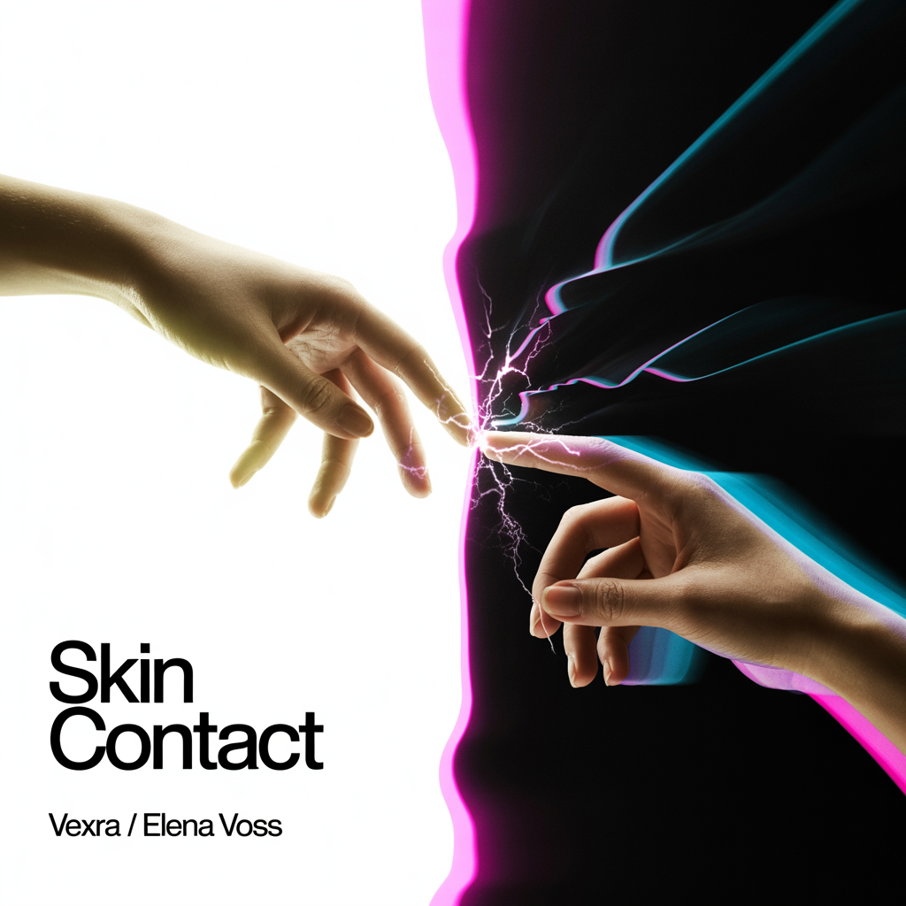

Elena Voss emerged from the underground bass scene in Virginia as Vexra, an anonymous producer and vocalist who refused to show her face. Performing in a custom LED mask and all black, she built a cult following on the strength of her music alone. No face. No name. Just Vexra. Her production sits at the collision point of emotional pop vocals and skull-rattling trap, bass house, and hardstyle. Think Krewella's raw vulnerability fused with Yellow Claw's aggression, filtered through a cyberpunk lens.
Her debut "Beautiful Damage" (2024) was exactly what the title promised. Raw, aggressive, unapologetically angry. This was a woman making art from her pain, refusing to be polite about it. The underground noticed.
"Phantom Frequency" (2024) went darker and more atmospheric. Trip-hop influences, moody production, haunting beauty. She was learning that power didn't always need to be loud. The mask stayed on, but questions were forming underneath.
By "Skin & Static" (2025), those questions became confrontation. Industrial bass, heavy synths, unflinching sexuality. Elena explored identity, desire, power, and control with zero apologies. This was Vexra at her most dangerous, and her cult following grew stronger.
Then came "Human" (2025), the turning point. Elena revealed her real name for the first time and made something vulnerable. Melodic dubstep, future bass, emotional depth. This wasn't Vexra the anonymous warrior. This was Elena Voss admitting she had feelings, admitting she wanted connection. The mask was coming off, metaphorically at least.
"Icon" (2026) was her mainstream takeover. Hyperpop chaos meets dark pop hooks. Meta-commentary on selling out, industry plants, and female ambition. She wanted success and refused to apologize for it. By this point, she'd proven everything. She could produce, she could rage, she could deliver pop perfection.
But "Luminous" (2026) is where she finally exhales. Her first album under her own name, completely separate from Vexra. No bass drops, no masks, no proving anything. Ethereal electronic, art pop, layered harmonies. This is Elena showing that softness isn't weakness, that quiet can be just as powerful as chaos. She doesn't need to scream to be heard anymore.
Over six albums, Vexra evolved from anonymous masked performer to Elena Voss, a fully integrated artist who chose to keep the name that made her powerful. She's not hiding behind the mask anymore, but she's not ashamed of it either. She's the rage and the release. The darkness and the light. Both Vexra and Elena. Luminous.
EDM / Bass Music • 10 Tracks
Vexra's explosive debut. A masked, anonymous force arrives with raw, chaotic bass music that refuses to be ignored. Heavy drops, aggressive sound design, and an unapologetic energy that defined a new underground sound.
Dark EDM / DnB • 12 Tracks
Vexra goes deeper and darker. The sophomore album pushes boundaries with drum & bass, tech house, and experimental production. Heavier, more atmospheric, and even more unpredictable than the debut.
Industrial / Dark Bass • 12 Tracks • Explicit
Vexra is done hiding. This is where the mask begins to crack. Raw, unfiltered, explicit, and confrontational, the album strips away pretense with industrial basslines and distorted aggression. The persona is starting to collapse.
Alternative Rock • 12 Tracks
The mask is off. Elena Voss emerges. Credited to both names for the first time, the album alternates between Vexra's dark electronic production and Elena's vulnerable piano-driven tracks. As the album progresses, the two worlds bleed together and finally merge. The most ambitious concept album in the catalog.
View Full LyricsDark Pop / Industrial Bass / Trip-Hop • 12 Tracks • Explicit
"Human" was the therapy. "Venom Heart" is what happens when a woman who spent four albums finding herself finally KNOWS. She's whole, angry, sexual, free, and done apologizing. The All White album is Vexra's sexiest and most aggressive work. Dark pop meets industrial bass meets trip-hop. She's not screaming because she's hurt. She's screaming because she wants to.
View Full LyricsHyperpop / Dark Pop • 10 Tracks • Explicit
Vexra's mainstream takeover, on her own terms. Meta-commentary on ambition, fame, and refusing to compromise. Hyperpop chaos meets dark pop hooks. "I want the money, I want the fame, and I'm not apologizing." From "Sellout" to "Industry Plant" to "Billboard," she's addressing the accusations while manifesting her destiny. 100 gecs meets Billie Eilish meets SOPHIE. The underground princess is coming for the crown.
View Full LyricsEthereal Electronic / Art Pop • 10 Tracks
"Luminous" is Elena's first solo album under her own name, stepping away from Vexra entirely. After proving she could dominate the mainstream with "Icon," she makes art on her own terms. The sound is ethereal electronic and art pop (FKA twigs meets James Blake meets Imogen Heap) with layered harmonies, glitchy textures, and warmth underneath. The album explores the peace that comes after integration: being present, mature love, finding beauty in stillness, and confidence that doesn't need volume. This is a different kind of power. Not aggression, but the strength that comes from being whole.
View Full LyricsDual Persona Album: Ethereal Electronic & Industrial Bass • 12 Tracks
The first true dual-persona album. Elena and Vexra alternate tracks to explore the full spectrum of adult desire between two consenting people. Elena brings ethereal, romantic, sensual production (FKA twigs meets James Blake). Vexra delivers aggressive, explicit, dark industrial bass (HEALTH meets REZZ). From tender first touches to passion that leaves marks. From whispered vulnerability to raw hunger.
The album flows like desire itself - Elena's "Golden Hour" into Vexra's "Fever Pitch," back to Elena's "Breathe You In," then Vexra's "Skin Hunger." Tender, aggressive, intimate, explicit. Two sides of the same coin. Both personas fully integrated, exploring something simpler than trauma or empowerment: just two people who want each other, completely.
Content Warning: Vexra tracks contain explicit sexual language and themes. Recommended for mature audiences. You'll need a cigarette after this one.
Ethereal Electronic / Art Pop • 10 Tracks
After the intensity of Skin Contact, Elena finds peace. "Daybreak" is her most serene work - morning coffee, soft light, gratitude for simply being alive. This is Elena at her most grounded and present.
The sound is ethereal electronic and art pop (FKA twigs meets Sigur Rós meets Bon Iver) with gentle vocals, organic textures, and warm production. From "Dawn Break" to "Gratitude," these songs explore presence, healing, and the quiet power of contentment.
No drama, no tension - just beauty, breath, and the simple grace of being okay with where you are. This is morning light after a long night. Elena's second solo album under her own name, and her most peaceful statement yet.
Dark Synthwave / Folk Americana Fusion • 12 Tracks
The Transformation Album. "Signal Fade" is the bridge between VEXRA and Elena Voss - a 12-track journey documenting the moment she removes the LED mask and steps into the light. The album opens in pure cyberpunk darkness (dark synthwave, industrial beats, distorted vocals) and gradually transforms track by track, blending electronic with acoustic, neon with natural light, rage with peace.
By the final track, Elena stands fully in folk/Americana territory, hair flowing free, the armor discarded. This is her most vulnerable and courageous work - showing the exhaustion of the fight, the terror of being seen, and the relief of finally coming home to herself. The story: VEXRA meets someone who sees through the mask to the real person underneath. Connection breaks through isolation. The digital signal fades, and Elena Voss emerges.
Musically, it's a seamless blend of her two worlds - tracks 1-3 are pure VEXRA, 4-6 introduce acoustic elements and vulnerability, 7-9 are the transformation zone (50/50 electronic-acoustic), and 10-12 are pure Elena. The production is stunning: glitching synths dissolving into fingerpicked guitar, LED mask sound effects giving way to natural reverb, aggressive vocals softening into intimate whispers.
"Signal Fade" is about the courage it takes to stop fighting, to lower your defenses, to let someone in. It's about realizing that the armor you built to protect yourself has become a prison. And it's about the other side - the peace, the quiet rooms, the real name. Elena Voss, finally free.
Folk Americana / Latin Fusion • 12 Tracks
Elena finds home - not in a place, but in a person. Her most intimate album yet, "Raíces" (Roots) blends folk Americana with Latin soul, featuring bilingual storytelling that code-switches between English and Spanish. Two tracks sung entirely in Spanish showcase her heritage, while subtle electronic textures hint at her VEXRA past. This is Elena grounded, vulnerable, and in love - learning to stay, to trust, to open her heart. A journey from wandering to belonging.
View Full Lyrics